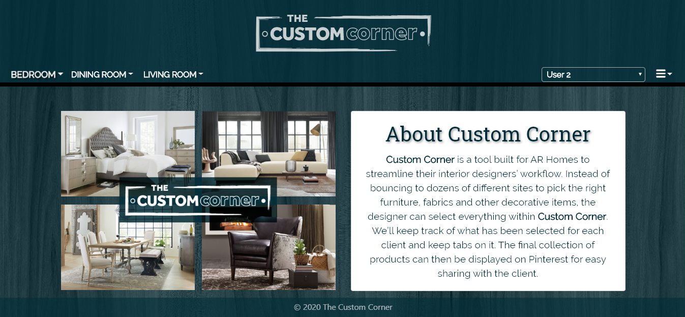

Custom Corner Demo
Welcome to the demo website for www.custom-corner.com. Since Custom Corner is only available to authenticated users, this site serves as a demonstration of the app's functionality. Custom Corner is a Full MERN Stack app that scrapes various furniture vendors, aggregates and filters results to be staged for a variety of clients, and allows the user to pin clients' staged furniture to Pinterest boards.
Technologies Used
React
- Bootstrap-React
- React-Toastify
Node
- JSON Web Token
Mongo
- node - Mongoose, Mongoose-bcrypt
- python - pymongo
Scraping
- NodeJS - Axios, Cheerio, Puppeteer
- python - requests, BeatifulSoup (bs4)
Design
- Figma
Infrastructure
Custom Corner is hosted on Google Cloud Platform, and is currently utilizing Docker to run the web application. There are 4 containers running on the server:
- Mongo (Houses the database of the application.)
- NGINX (Performs reverse proxy, and handles SSL. It also redirects traditional http connections to https)
- Certbot (Automates keeping SSL Cert with LetsEncrypt Valid.)
- Node (Runs the react-app.)
Signing In
Upon reaching the Custom Corner landing page, the user will see a login button at the bottom of the screen. Clicking this button brings up a modal where the user can enter their login credentials and access the site. Without valid account authentication the user will be unable to access anything other than the landing/about page.

Creating and Selecting Clients
By selecting clients from the dropdown menu, the user will be brought to a client create/delete page where new clients can be added and deleted. Deleting a client also deletes all saved items associated with said client from the database.

Data Collected
Each item scraped into our database includes the item's vendor, description, SKU, url to the vendor's page for that item, and a url to a printable taersheet for that item.
Filtering Results
This app scrapes data from 7 different furniture vendors' websites daily. If the user wishes to filter a particular type of furniture by vendor they can do so via the filters present on the lefthand side of the screen. The furniture categories in the navbar and the vendor filter are built dynamically based on the information saved to our database each scrape.
Saving to a Client's Tackboard
Once a client has been created and selected on the navbar, new furniture entries can be saved to their tackboard. Clicking the thumb tack icon on the top right of a search result saves it to the selected client's tackboard. Once an item has been saved, clicking the same thumb tack icon on a tackboard entry will remove the item from the associated client's tack board.

Pinterest Integration
Once the user has saved some items to a client's tackboard, those items can be saved to a Pinterest board of their choice. Clicking the red save button at the top right of the tackboard will call a popup that allows the user to select an item from the tackboard and save it to a Pinterest board. The Pinterest entry saved will link to the original vendor's url for that item. If the user is not currently logged in to a pinterest account they will be prompted to sign in or create an account first.